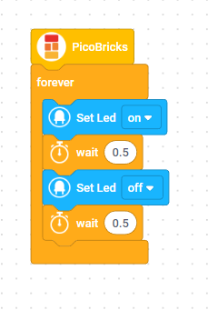
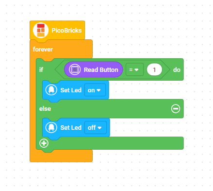
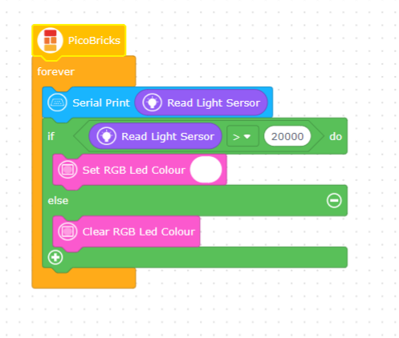
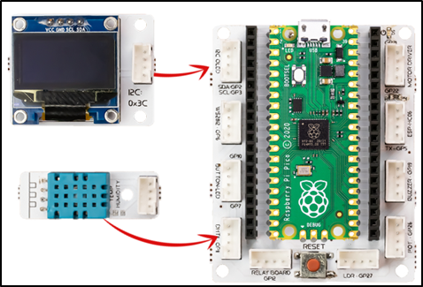
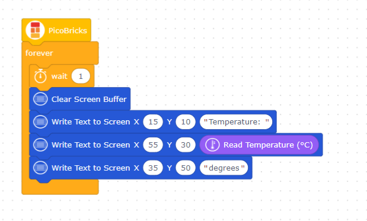
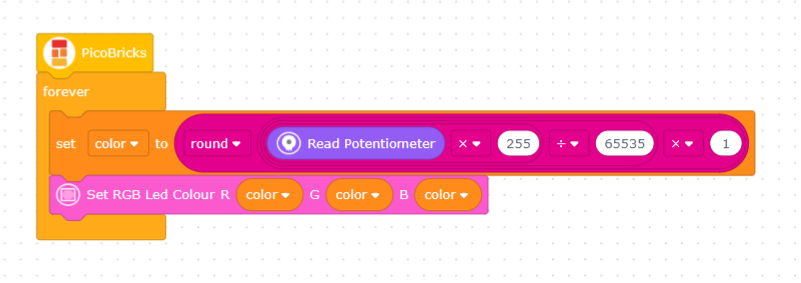
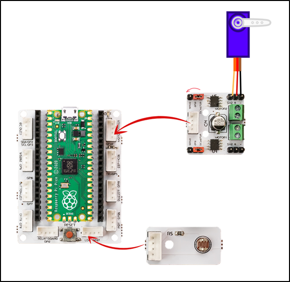
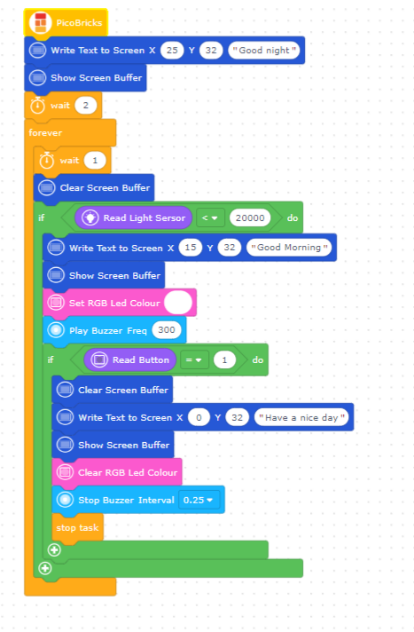
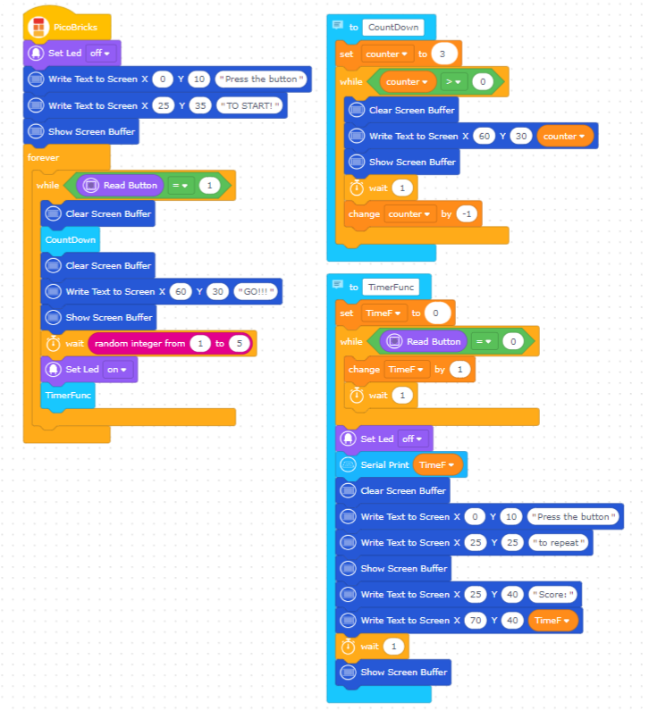
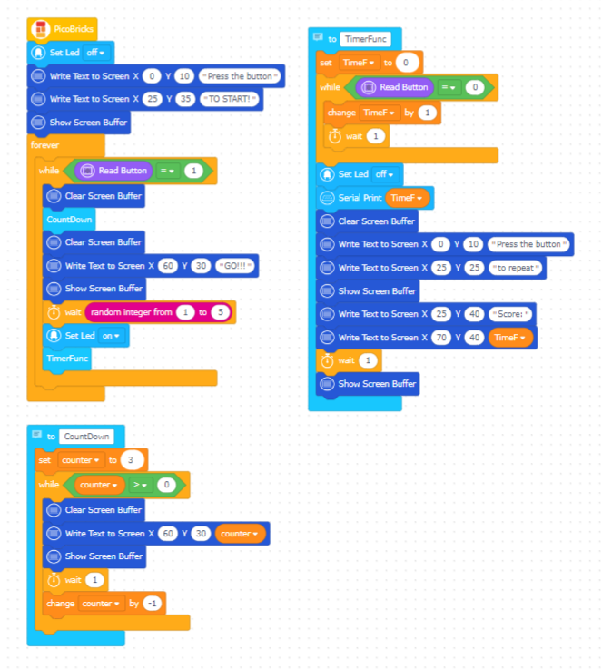

The first step to robotic c oding, also known as physical programming, is the Blink application. It means winking at robotic coding. By simply connecting an LED to the circuit board, the coding is made to keep the LED blinking continuously.
Ask people who have developed themselves in the field of robotic coding how they got to this level. The answer they will give you starts like this; it all started with a flashing LED! LEDs are the language of electronic devices.
Wiring Diagram

Project Code (Click to Try It)

Different types of buttons are used in electronic systems. Locked buttons, push buttons, switched buttons...
There is 1 push button on Picobricks. They work like a switch, they conduct current when pressed and do not conduct current when released. In the project, we will understand the pressing status by checking whether the button conducts current or not. If it is pressed, it will light the LED, if it is not pressed, we will turn off the LED.
Project Video
Project Code (Click to Try It)

It is called the state of being autonomous when electronic systems make a decision based on the data they collect and perform the given task automatically.
The components that enable electronic systems to collect data from their environment are called sensors. Many data such as the level of light in the environment, how many degrees the air temperature is, how many lt/min water flow rate, how loud the sound is, are collected by the sensors and transmitted to PicoBricks as electrical signals, that is data.
Wiring Diagram
Project Code (Click to Try It)

Sensors are the sense organs of electronic systems. We use our skin to feel, our eyes to see, our ears to hear, our tongue to taste, and our nose to smell.
Project Details and Algorithm Picobricks has a DHT11 module. This module can sense the temperature and humidity in the environment and send data to the microcontroller. In this project, we will write the necessary codes to print the temperature values measured by the DHT11 temperature and humidity sensor on the OLED screen.
Wiring Diagram

Project Code (Click to Try It)

When we look at the electronic items around us, you realize that they have many replaceable features and they are designed by engineers to be most useful to the user. Such as lighting systems, cooking systems, sound systems, cleaning systems.
Graphic monitors make it very easy to detect the fault. In this project, we will prepare a project in which we increase or decrease the brightness of the red LED with a potentiometer. In addition, we will simultaneously monitor the electrical change occurring during this process on the Microblocks graphic monitor.
Wiring Diagram
Project Code (Click to Try It)

If the electronic systems to be developed will fulfill their duties by pushing, pulling, turning, lifting, lowering, etc., pneumatic systems or electric motor systems are used as actuators in the project.
In this project, we will automatically play Google Chrome offline dinasour game to picobricks. In the game, Picobricks will automatically control the dinosaur’s movements by detecting obstacles.
Wiring Diagram

Project Code (Click to Try It)

In this project, we will create a timer alarm that adjusts for daylight using the light sensor in Picobricks.
Global warming is affecting the climate of our world worse every day. Countries take many precautions and sign agreements to reduce the effects of global warming. The use of renewable energy sources and the efficient use of energy is an issue that needs attention everywhere, from factories to our rooms.
Wiring Diagram

Project Code (Click to Try It)
In our project, we will firstly display the temperature values measured by the DHT11 temperature and humidity sensor on Picobricks.
Air conditioners are used to cool in the summer and warm up in the winter. Air conditioners adjust the degree of heating and cooling according to the temperature of the environment. While cooking the food, the ovens try to rise to the temperature value set by the user and maintain that temperature.
Wiring Diagram

Project Code (Click to Try It)

In this project you will learn about the randomness used in every programming language.
Now we will prepare a game that develops attention and reflexes. Moving quickly and being able to provide attention for a long time are important developmental characteristics of children. Preschool and primary school children do activities that increase their attention span and reflexes, as they are liked by their parents and teachers.
Wiring Diagram
Project Code (Click to Try It)
